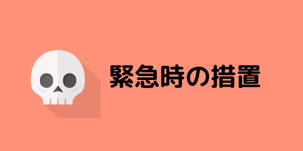
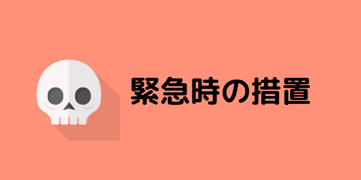

健康管理で気を付けるべき点は、細かい所まで言い
始めるとキリがありません。ここでは、現場作業を
するにあたり、絶対に守るべき点に絞って説明
していきます。
・健康診断結果に基づく対応
・日常の健康管理
・健康状態の確認
疾患の中には、熱中症になりやすい症状、治療薬の
効力が熱中症の発症を助長するようなものがありま
す。そのため、次の疾患を持つ人に対しては、特に
気を付けて管理する必要があります。
【糖尿病】
糖尿病患者は多量の水分を摂取・排出するため、
知らない内に脱水症状になっていることが多いで
す。
【高血圧症・心臓病・腎臓病】
これらの疾患の患者は利尿剤を服用していること
が多く、脱水症状になりやすいです。また、塩分
や水分の補給に制限があることが多いです。
【皮膚疾患・精神疾患】
広範囲の皮膚疾患があると発汗が上手くいかない
場合があります。
日常の健康管理は最も基本的な対策でしょう。一人一人が体調に気を付けていれば、熱中症が起こる可能性は
確実に低くなります。まずは自職場の同僚について、次の4点をチェックしてみましょう！
☑風邪気味など体調不良ではないか？
☑前日に飲酒が多くなかったか？
☑朝食を抜いていないか？
☑寝不足ではないか？
また、全ての状態が最悪な場合がこちらです。
健康状態の管理には、具体的に以下の4点について気を付けるようにしましょう。
また、健康状態や水分の摂取状態の確認表を載せておきます。職場で使う際の参考にしてください。
引用元：参照：厚生労働省,職場における熱中症予防対応マニュアルp39
引用元：参照：厚生労働省,職場における熱中症予防対応マニュアルp34